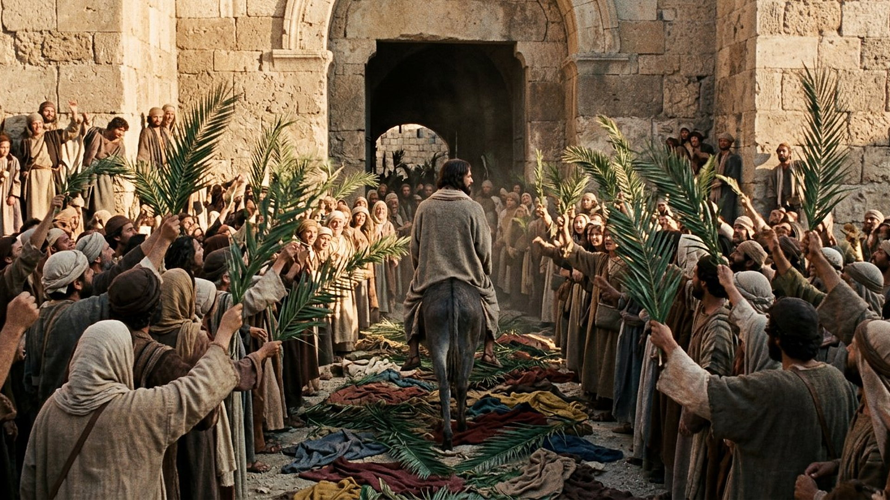
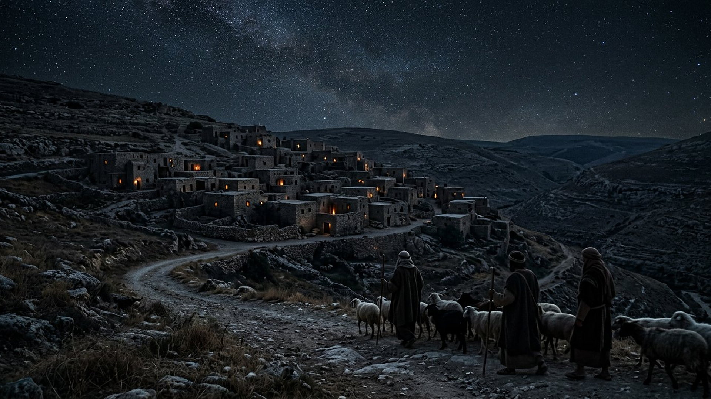
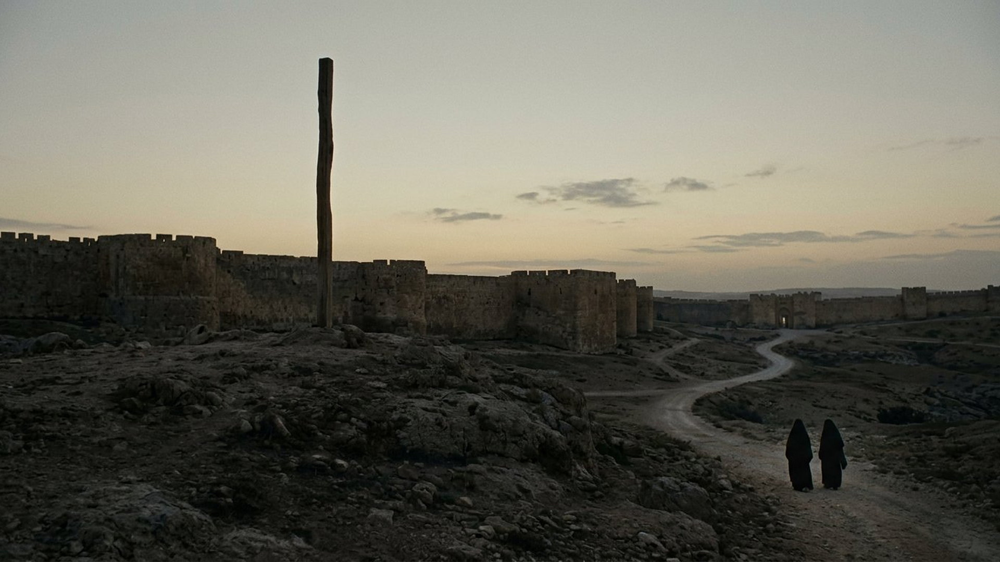

Annoncé : Genèse 22:18.
Accompli : Matthieu 1:1.
Par Abraham, la bénédiction devait atteindre toutes les nations.

Salle 09 — ACCOMPLIE
« Voici que ton roi vient à toi ; il est juste et victorieux, humble et monté sur un âne, sur le petit d'une ânesse. » — Zacharie 9:9 (d'après Crampon 1904)
Reconstitution numérique — l'entrée à Jérusalem, de dos, sans auréole.
Aucun « prophète » unique n'a signé ce portrait : il s'est composé par touches, de Moïse à Zacharie, sur environ dix siècles. Lignée, lieu de naissance, caractère, trahison chiffrée à la pièce près, paroles au pied du poteau, tombeau d'un riche : cliquez sur chaque détail pour ouvrir la paire annonce ↔ accomplissement. Les détails marqués « hors de contrôle humain » sont ceux qu'aucun imposteur n'aurait pu arranger lui-même : son lieu de naissance, le prix de sa trahison, le sort jeté sur sa tunique, des jambes non brisées.
0 détail(s) ouvert(s) sur 33 — 33 affiché(s).
Annoncé : Genèse 22:18.
Accompli : Matthieu 1:1.
Par Abraham, la bénédiction devait atteindre toutes les nations.
Annoncé : Genèse 49:10.
Accompli : Luc 3:33.
Le bâton de commandement ne devait pas quitter Juda avant le Messie.
Annoncé : Jérémie 23:5.
Accompli : Matthieu 1:6 ; Luc 3:31.
Un descendant royal de David, annoncé des siècles après la chute de la monarchie.
Annoncé : Michée 5:2.
Accompli : Matthieu 2:1-6.
Une bourgade insignifiante désignée sept siècles à l'avance — et ce sont les chefs religieux eux-mêmes qui la citent à Hérode.
Annoncé : Isaïe 7:14.
Accompli : Matthieu 1:22, 23.
Le nom symbolique Emmanuel accompagne l'annonce.
Annoncé : Osée 11:1.
Accompli : Matthieu 2:14, 15.
La fuite en Égypte puis le retour rejouent l'histoire d'Israël.
Annoncé : Jérémie 31:15.
Accompli : Matthieu 2:17, 18.
Le massacre des tout-petits de Bethléem par Hérode, qu'aucun parent ne pouvait orchestrer.
Annoncé : Isaïe 40:3.
Accompli : Marc 1:2-4.
Une voix qui crie avant même l'arrivée du Messie : Jean le Baptiste.
Annoncé : Isaïe 9:1, 2.
Accompli : Matthieu 4:13-16.
Le ministère commence loin de Jérusalem, dans la Galilée méprisée.
Annoncé : Psaume 78:2.
Accompli : Matthieu 13:34, 35.
Une méthode d'enseignement annoncée dans un psaume historique.
Annoncé : Isaïe 53:4.
Accompli : Matthieu 8:16, 17.
Les guérisons en masse de Capharnaüm, présentées comme l'accomplissement direct du texte.
Annoncé : Isaïe 42:1-3.
Accompli : Matthieu 12:18-21.
Un serviteur doux, qui refuse l'écrasement des faibles — trait de caractère, pas un événement.
Annoncé : Psaume 118:22.
Accompli : Matthieu 21:42-44.
Jésus applique lui-même ce psaume au rejet qui l'attend.
Annoncé : Zacharie 9:9.
Accompli : Matthieu 21:4, 5.
Un roi qui entre humble, monté sur le petit d'une ânesse, le jour exact où les foules l'acclament.
Annoncé : Psaume 41:10.
Accompli : Jean 13:18 ; 18:2.
Celui qui mangeait mon pain a levé le talon contre moi : Juda Iscariote, l'un des Douze.
Annoncé : Zacharie 11:12, 13.
Accompli : Matthieu 26:15.
Le prix exact — le salaire d'un esclave — pesé et convenu avec les chefs des prêtres.
Annoncé : Zacharie 11:13.
Accompli : Matthieu 27:9, 10.
L'argent du remords achète le champ du potier pour enterrer les étrangers. Matthieu rattache l'ensemble à Jérémie, le prophète du champ acheté et du potier (Jérémie 19 ; 32), dont Zacharie reprend les images.
Annoncé : Psaume 35:11.
Accompli : Marc 14:55-57.
Des témoignages fabriqués, qui ne s'accordent même pas entre eux.
Annoncé : Isaïe 53:7.
Accompli : Matthieu 27:12-14.
« Il n'a pas ouvert la bouche » : son silence étonne le gouverneur lui-même.
Annoncé : Zacharie 13:7.
Accompli : Matthieu 26:31, 56.
Le berger frappé, tous les disciples s'enfuient — cette nuit même.
Annoncé : Isaïe 53:3-5.
Accompli : Jean 1:10, 11 ; récits de la Passion.
Blessé pour nos transgressions : le cœur du chant du Serviteur, écrit des siècles avant.
Annoncé : Psaume 22:8, 9.
Accompli : Matthieu 27:39-43.
Jusqu'aux paroles de dérision au pied du poteau, presque mot pour mot.
Annoncé : Psaume 22:17.
Accompli : Jean 20:25-27.
Le Ressuscité montre les marques des clous à Thomas.
Annoncé : Psaume 22:19.
Accompli : Jean 19:23, 24.
Des soldats romains jouent la tunique sans couture — détail qu'aucune victime ne contrôle.
Annoncé : Psaume 69:22.
Accompli : Jean 19:28-30.
On lui présente une éponge de vinaigre au bout d'un roseau.
Annoncé : Isaïe 53:12.
Accompli : Marc 15:27, 28.
Exécuté entre deux malfaiteurs.
Annoncé : Psaume 34:21.
Accompli : Jean 19:33-36.
Contrairement aux deux autres condamnés, on ne lui brise pas les jambes.
Annoncé : Psaume 22:2.
Accompli : Matthieu 27:46.
« Mon Dieu, mon Dieu, pourquoi m'as-tu abandonné ? » — ses paroles mêmes ouvrent le psaume.
Annoncé : Zacharie 12:10.
Accompli : Jean 19:34-37.
« Ils regarderont vers celui qu'ils ont percé » : le coup de lance du soldat.
Annoncé : Isaïe 53:9.
Accompli : Matthieu 27:57-60.
Joseph d'Arimathée, notable riche, donne son tombeau neuf — pour un condamné exécuté comme un criminel.
Annoncé : Psaume 16:10.
Accompli : Actes 2:25-32.
« Tu n'abandonneras pas mon âme au séjour des morts » : Pierre l'applique à la résurrection, le jour de la Pentecôte.
Annoncé : Isaïe 49:6.
Accompli : Luc 2:30-32 ; Actes 13:47.
Le salut devait dépasser Israël et atteindre les nations — ce que l'histoire du Iᵉʳ siècle a vu commencer.
Annoncé : Psaume 68:19.
Accompli : Éphésiens 4:8-10.
L'ascension conclut la trajectoire annoncée.


DONNÉE HISTORIQUE DÉBATTU
L'historien romain Tacite rapporte, vers 116 de n. è., que le « Christ » avait été exécuté sous le procurateur Ponce Pilate sous Tibère (Annales, XV.44) — un témoignage païen, hostile, qui fixe le cadre. L'historien juif Josèphe mentionne « Jacques, frère de Jésus dit le Christ » (Antiquités juives, XX.9.1), passage largement tenu pour authentique. En revanche, son célèbre paragraphe sur Jésus (XVIII.3.3) a été partiellement retouché par des copistes ultérieurs : il est donc étiqueté DÉBATTU et n'est jamais présenté ici comme une preuve nette.
Tacite, Annales XV.44 (bibliothèque numérique Perseus, université Tufts)
Lignée, lieu de naissance, caractère, prix exact de la trahison, paroles au pied du poteau, tombeau d'un homme riche : le portrait du Messie s'est composé par touches, sur environ dix siècles, bien avant le premier siècle. Ouvrez chaque carte de la grille et filtrez-les par catégorie. Certaines portent la mention hors de contrôle humain : ce sont les détails qu'aucun imposteur n'aurait pu arranger lui-même, de sa naissance à Bethléem aux gestes de ses bourreaux. La salle distingue aussi honnêtement les témoignages extérieurs : ce que Tacite et Josèphe confirment, et le passage de Josèphe partiellement retouché par des copistes, étiqueté débattu et jamais présenté comme une preuve nette.
Pour quelques détails publics — entrer à Jérusalem sur un ânon —, l'hypothèse se discute. Mais elle s'effondre sur les détails marqués « hors de contrôle humain » dans la grille : naître à Bethléem d'une famille de Nazareth, être vendu pour exactement trente pièces puis voir cet argent acheter le champ du potier, être exécuté sans qu'on lui brise les jambes alors que c'était l'usage pour hâter la mort, voir des soldats tirer sa tunique au sort, et être déposé dans le tombeau neuf d'un notable. Personne ne met en scène sa propre naissance, sa trahison au prix exact, ni les gestes de ses bourreaux.
Salle suivante : les 70 semaines — l'année du Messie calculée